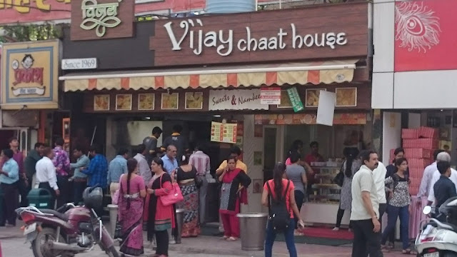

 You might wonder why has this place been named as Chappan Dukan, which literally means 56 shops !! Originally, when the market started, there were actually 56 shops here and thus the name !! However, as time passed by, some of the retailers sold their shops to the ones next-door, who wanted to make their shops bigger !! Even today, if you count the number of pillars between the shops, you'll actually see that there are exactly 56 shops !!
Now, the foodie & convenience market is not confined to just these shops on the main street, but has also extended in the area behind and around these original shops - the whole area being called as Chappan Dukan (56 Shops) !! Below is the list of some of the eating joints and Indian sweetmeat shops (mithai) present there:
* FYI
* Rollacosta
* Cakes 365
* Rolls Mania
* Pizza World
* Jumbo King
* Dosa Centre
* Café Yummy
* Tibb's Frankie
* Johny Hot Dog
* Agrawal Sweets
* Gangour Sweets
* TAB - Taste a Bite
* Vijay Chaat House
* New Chappan Bhog
* Milap - the Paan Destination
* Madhuram Sweets & Namkeen
and many more........................